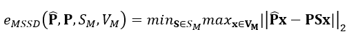
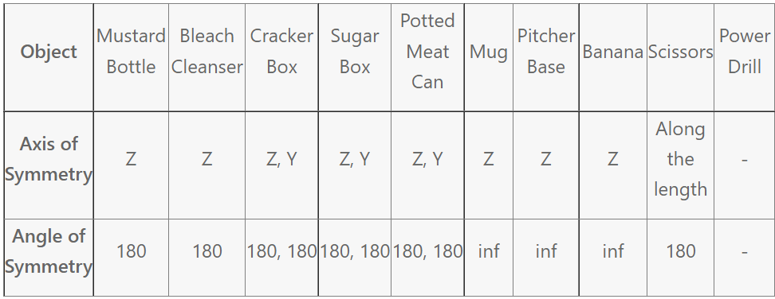

Overview
We present the HANDS22 Challenge, a public competition designed for the evaluation of the tasks of 3D hand and object pose estimation during interaction. Hand-hand and hand-object are the most common forms of interactions using human hands and understanding the 3D poses of hands and objects is critical to building AR/VR systems or robotic applications. We introduce two separate tasks for these scenarios and evaluate the performance of the participating methods. Winners of the tasks and prizes will be announced and awarded during the workshop and results will be disseminated in a subsequent challenge publication.
Our first task focuses on hand-held object pose estimation. While several methods have been developed for estimating object poses, very few works have focused on hand-held object pose estimation using the hand context. To encourage further research in this direction, we introduce Task 1: Hand-held Object Pose Estimation using HO-3D dataset, which contains 3D pose annotations of hand and object. In this task, the participants are required to estimate the pose of the hand-held object from an RGB image and are encouraged to utilize the provided (both train and test set) ground-truth 3D poses of the hand.
Our second task is aimed at two-hands pose estimation during hand-hand and hand-object interactions. Many hand pose estimation methods rely on 3D pose annotations for training which are difficult to obtain especially during interactions, thus limiting their application in real-world scenarios. To address this shortcoming we introduce, Task 2: Semi/Self-supervised Two-hands 3D Pose Estimation during Hand-object and Hand-hand interactions using the recently introduced Assembly101 dataset. The dataset provides mutli-view captured videos of hand-object interaction during assembling and disassembling of toy-vehicles without pose annotations. The accuracy of the participating methods is evaluated on a manually-annotated test set.
Winners and prizes will be announced and awarded during the workshop.
Please visit the challenge pages for more details.
General Rules and Participation
We follow the rules of previous challenges and more details can be found in the challenge page.
-
Submission deadline:
Oct. 10. 2022Oct. 15. 2022. -
To participate and download the dataset please fill the form (closed) and accept the terms and conditions.
-
Submissions are processed through CodaLab (register using the same email id provided in the above form):
-
Each team must register under only one user id/email id. Teams found to be registered under multiple IDs will be disqualified.
-
In order for participants to be eligible for competition prizes and be included in the official rankings (to be presented during the workshop and subsequent publications), information about their submission must be provided to organizers. Information may include, but not limited to, details on their method, synthetic and real data use, architecture and training details. Check previous challenge publication to have an idea of the information needed.
-
Winning methods may be asked to provide their source code to reproduce their results under strict confidentiality rules if requested by organizers/other participants.
-
For each submission, participants must keep the parameters of their method constant across all testing data for a given task.
Task 1 - Hand-held Object Pose Estimation
Overview
The goal of this task is to estimate the pose of hand-held objects from a single RGB image. Hand-held object pose estimation has several applications in robotics and augmented reality. Acquiring accurate pose of objects can be a crucial step during handovers in human-robot interaction, or in the metaverse applications that aim to blur the boundaries between the real and the virtual worlds. Many previous methods for object pose estimation have focused on acquiring 6D pose of known-objects (3D object models available) in non-interactive scenarios [1,2]. In interactive scenarios, such as hand-object interactions, the manipulator (hand) provides an important cue/prior about the pose of the manipulated object and can be utilized to improve the accuracy of the estimated object pose [3].
In this challenge, we refactor the HO-3D dataset to create a new train/test split and provide the hand and object 3D poses for the train split, and only the hand poses for the test split. The participants are required to estimate the object pose from the RGB image in the test split and are encouraged to utilize the ground-truth hand poses. The participants are also free to estimate the hand poses themselves. The submissions are evaluated on CodaLab server.
Dataset Details
The train/test split contains 10 objects from the YCB dataset [4] which were originally used in the HO-3D dataset. The train set contains 79,889 images and test set contains 19,852 images. Note that the object translation is defined relative to the root joint (wrist) of the hand and not the camera optic centre.
The following annotations are provided in the train split:
- Object Pose (translation relative to hand wrist joint)
- Object name
- Object corner locations in the image
- MANO hand pose parameters
- MANO hand shape parameters
- Hand 3D joint locations
- Hand 2D joint locations in the image
- Hand-object segmentation map
The following information is provided for test split:
- MANO hand pose parameters
- MANO hand shape parameters
- Hand 3D joint locations
- Hand 2D joint locations in the image
Rules of Participation
- The participants are not allowed to use the original HO-3D train/test split as the test split for this challenge overlaps with the train split of original HO-3D. The train/test split for this challenge has been carefully chosen to detect such violations and the violators will be immediately disqualified.
- Use of other labeled datasets (either real or synthetic) is not allowed.
- Use of rendered images using the provided hand-object poses is allowed.
- Use of external unlabelled data is allowed (self-supervised and unsupervised methods).
Evaluation
The accuracy of the methods will be evaluated based on the standard metric, Mean Symmetry-aware Surface Distance (MSSD) [5], which also considers the symmetricity of objects. Due to severe occlusion of the object by the hand, distinctive features on the object may not be visible leading to ambiguous poses. The MSSD metric is defined as,

where SM is a set of global symmetry transformations, VM is a set of mesh vertices of object model M, \hat{P} is the ground-truth pose and P is the estimated pose. The global angle of symmetry for each of the 10 objects is given in the table below.

Submission Format
Estimated object rotation and translation relative to hand root joint should be dumped in a json file. Please refer to challenge_submit.py script in https://github.com/shreyashampali/HANDS2022_Obj_Pose for the submission format. The json files should be compressed into to .zip file before submission.
General comments
- Ordering of the joints: Please refer to 'skeleton.txt' in dataset folder for ordering of the joints.
- The images in this dataset are cropped images of the original HO-3D dataset. The object translation needs to be estimated relative to the root joint of the hand.
- Coordinate system: All annotations assume opencv coordinate system i.e., positive x-axis to the right, positive y-axis downwards and positive z-axis into the scene.
Links
Dataset Download Link: Please fill the form(closed) to get the download link
Github Page: https://github.com/shreyashampali/HANDS2022_Obj_Pose (contains visualization, submission, and evaluation scripts)
HANDS2022 Website: https://sites.google.com/view/hands2022/call-for-extended-abstract?authuser=00
References
[1] Mahdi Rad and Vincent Lepetit. “BB8: A Scalable, Accurate, Robust to Partial Occlusion Method for Predicting the 3D Poses of Challenging Objects without Using Depth”, In Proc. IEEE Int'l Conf. on Computer Vision (ICCV), 2017.
[2] Wadim Kehl, Fabian Manhardt, Federico Tombari, Slobodan Ilic, Nassir Navab. “ SSD-6D: Making RGB-Based 3D Detection and 6D Pose Estimation Great Again”, ICCV 2017.
[3] Yufei Ye, Abhinav Gupta, Shubham Tulsiani. “What's in your hands?3D Reconstruction of Generic Objects in Hands”, CVPR 2022.
[4] Yu Xiang, Tanner Schmidt, Venkatraman Narayanan, and Dieter Fox. “PoseCNN: A Convolutional Neural Network for 6D Object Pose Estimation in Cluttered Scenes”. Science, 2018.
[5] Tomas Hodan, Martin Sundermeyer, Bertram Drost, Yann Labbe, Eric Brachmann, Frank Michel, Carsten Rother, and Jiri Matas. “BOP Challenge 2020 on 6D Object Localization”. In Computer Vision - ECCV 2020 Workshops - Glasgow, UK, 2020.
Task 2: Semi/Self-supervised Two-hands 3D Pose Estimation during Hand-object and Hand-hand interactions
Overview
Assembly101 is a new procedural activity dataset featuring 4321 videos of people assembling and disassembling 101 "take-apart" toy vehicles. Participants work without fixed instructions, and the sequences feature rich and natural variations in action ordering, mistakes, and corrections. Assembly101 is the first multi-view action dataset, with simultaneous static (8) and egocentric (4) recordings. The official website is https://assembly-101.github.io.
Instructions
Based on Assembly101, this challenge will emphasize reduced ground truth labels and focus on topics such as semi-supervised or self-supervised learning for training hand pose estimation systems. We target two-hand 3D pose estimation. For evaluation, we will use end point error and PCK curve taking annotation confidence into account.
Specifically, we will provide
- Multi-view hand object interaction videos without 3D hand pose annotation
- Camera intrinsic & extrinsic matrix for simultaneous static (8) and egocentric (4) recordings
- A validation multiview video with human annotated 3D & 2D labels (can not be used for training)
- An evaluation multiview video without labels for testing
Rules
For a fair comparison, we only allow to use below information
- Arbitrary method to get hand bounding box or hand segmentation (we provided one in the dataset)
- OpenPose to provide predicted 2D poses
- You can choose either static RGB videos or egocentric videos for semi-/self-supervised training
- Arbitrary synthetic data (e.g., synthetic dataset like RHD or self synthetic data like ObMan)
- HO-3D dataset in our HANDS22 Challenge (other real-world datasets are not allowed)
- Hand models (e.g., MANO)
- The validation/evaluation sets can not be used for training or fine-tuning
Submisson Format
The results are evaluated using the CodaLab server: https://codalab.lisn.upsaclay.fr/competitions/6979.
Estimated hand poses of each video should be dumped in a json file. Please refer to challenge_submit.py script in https://github.com/bestonebyone/HANDS2022_Assembly101 for the submission format. The json files should be compressed into to .zip file before submission.
Visualisation
Please refer to validation_vis.py script in https://github.com/bestonebyone/HANDS2022_Assembly101 for the validation visualisation.
Ordering of the joints
For each frame, the prediction (42x3) should follow 0-20 for right hand and 21-41 for left hand. 0-3: right thumb [tip to mcp], 4-7: right index, 8-11 right middle finger, 12-15 right ring finger, 16-19 right pinky finger, 20: right wrist, 21-24: left thumb, 25-28: left index, ..., 41: left wrist. Please check the annotation from the validation set for more information.
Acknowledgement:
Thanks to the Assembly101 team, for providing Assembly101 for our challenge and special thanks to Dr. Kun He for the annotations of the dataset.
Contact
hands2022@googlegroups.com